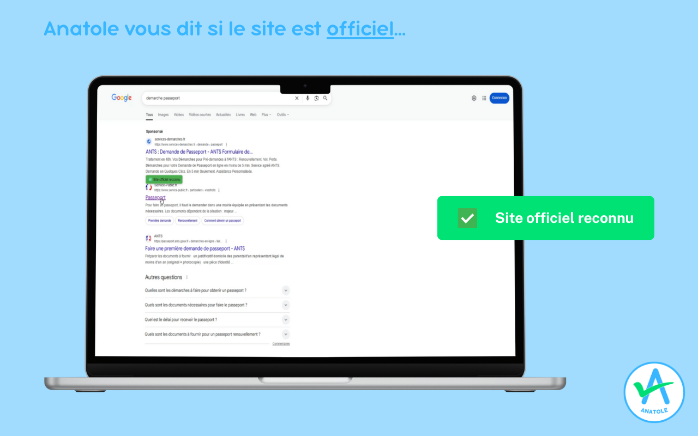

De nombreux sites non officiels vous proposent de réaliser vos démarches en votre nom, moyennant des frais élevés et injustifiés. Anatole vous aide à distinguer les sites officiels, simplement et rapidement, et vous sécurise dans vos démarches en ligne.
Anatole est une extension de navigateur conçue pour vous aider à distinguer les sites officiels des sites tiers lors de vos démarches administratives en ligne. Lorsque vous survolez un lien dans la page de résultats de Google, Anatole affiche une icône à côté du lien pour indiquer si le site est officiel ou s'il est susceptible de vous facturer des frais supplémentaires.
Anatole est une extension dont le code source est publiquement accessible, publiée sous licence Creative Commons BY-NC-SA 4.0. Cela signifie que chacun peut consulter, étudier et auditer le code, mais qu’il est interdit de le réutiliser à des fins commerciales sans autorisation préalable.
Anatole est gratuit, ne collecte pas de données personnelles. Pour toujours.
